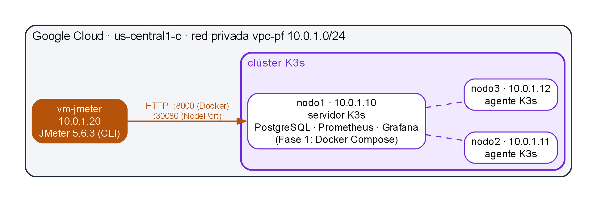
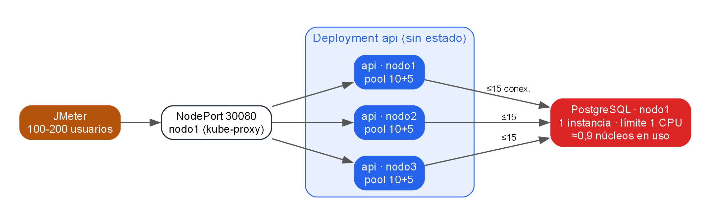
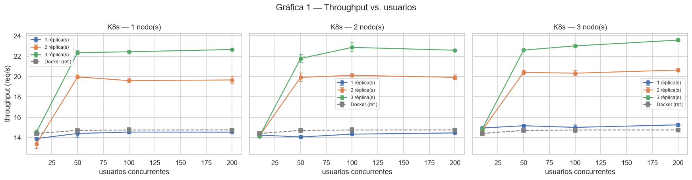
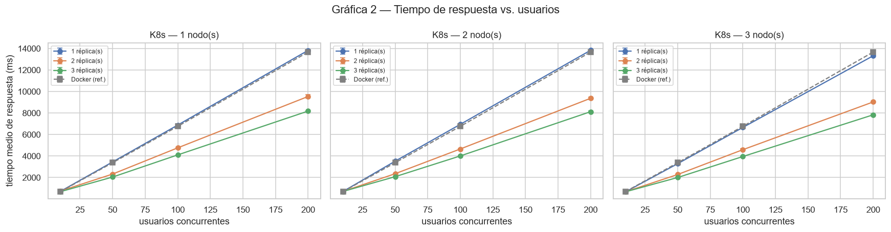
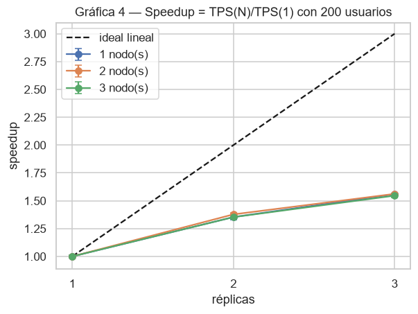
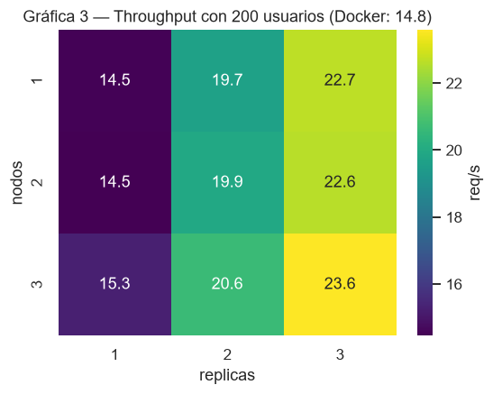
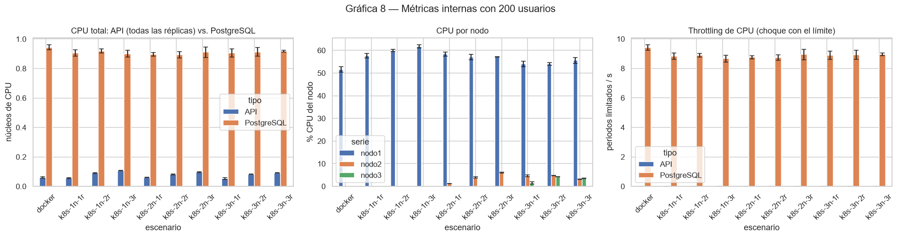
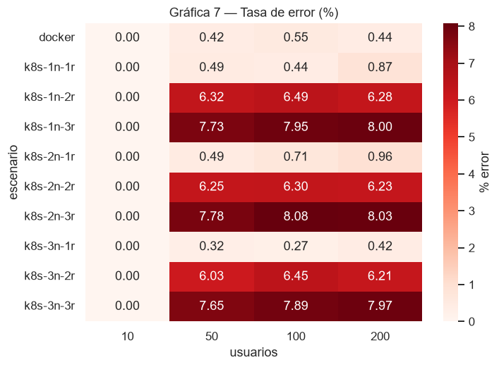

| Código | Integrante |
|---|---|
| 2221909 | David Esteban Suarez Lozano |
| 2221906 | Thomas Alejandro Perez Rojas |
| 2221922 | Jesus David Santodomingo Carrascal |
Este proyecto mide cómo cambia el comportamiento de una misma aplicación cuando se despliega de distintas formas. Se construyó una API REST de una tienda online (FastAPI + PostgreSQL) y se desplegó de 10 maneras: con Docker Compose en una sola máquina (línea base) y con Kubernetes (K3s) en 1, 2 y 3 nodos con 1, 2 y 3 réplicas de la API. Cada escenario se sometió a la misma carga con JMeter (10, 50, 100 y 200 usuarios concurrentes, 3 repeticiones por nivel): 120 corridas y unas 412.000 peticiones en total.
Los objetivos fueron: (1) medir el costo de la orquestación con Kubernetes frente a Docker sobre el mismo hardware; (2) evaluar el escalado horizontal al agregar réplicas y nodos; y (3) identificar los cuellos de botella usando, además de JMeter, las métricas internas de Prometheus.
API REST en FastAPI (Python 3.12, un worker de Uvicorn por contenedor) con PostgreSQL 16, accedida con SQLAlchemy asíncrono y asyncpg (pool de 10 + 5 conexiones por réplica). Los datos se generan con Faker y semilla fija (app/seed.py), así que son idénticos en todos los escenarios; la base de datos se resetea antes de cada escenario porque los POST hacen crecer la tabla de pedidos.
| Tabla | Registros | Índices | Endpoint | Tipo de carga | Peso |
|---|---|---|---|---|---|
| productos | 100.000 | PK, categoria | GET /productos/{id} | Lectura por clave primaria | 50 % |
| clientes | 20.000 | PK | GET /productos?categoria=X | Lectura paginada con filtro | 25 % |
| pedidos | 200.000 | PK, cliente_id | GET /productos/buscar?q= | ILIKE + conteo (recorre la tabla) | 10 % |
| items_pedido | 599.346 | PK, pedido_id, producto_id | POST /pedidos | Escritura transaccional | 10 % |
GET /reportes/ventas-por-categoria | JOIN + GROUP BY sobre 600 mil items | 5 % | |||
Además expone /health (consulta SELECT 1) y /metrics para Prometheus (prometheus-fastapi-instrumentator). La búsqueda y el reporte se diseñaron costosos a propósito: el primero no tiene índice para ILIKE y el segundo agrega toda la tabla de items.
Se usaron 4 VMs en Google Cloud n2d-standard-2 (2 vCPU AMD EPYC, 8 GB, no burstable, equivalentes al Standard_D2as_v5 de la guía), Ubuntu 24.04, región us-central1, en la misma red privada 10.0.1.0/24. JMeter corre en su propia VM para que el generador de carga no compita con la aplicación y la latencia de red sea baja y estable.


| Recurso | Docker Compose (Fase 1) | Kubernetes (Fases 2-4) |
|---|---|---|
| API | cpus: 1.0, mem_limit: 512m | limits: 1 CPU, 512Mi · requests: 250m |
| PostgreSQL | cpus: 1.0, mem_limit: 2g | StatefulSet, limits: 1 CPU, 2Gi, fijo en nodo1 (nodeSelector rol=db) |
| Entrada | puerto 8000 de nodo1 | Service NodePort 30080 en nodo1 (kube-proxy reparte) |
| Reparto | — | topologySpreadConstraints (maxSkew 1, ScheduleAnyway) |
| Sondas | healthcheck de PostgreSQL | readiness HTTP /health (timeout 30 s, 8 fallos) · liveness TCP |
| Datos | docker compose run api python seed.py | Job seed antes de cada escenario |
Los límites son idénticos en Docker y en Kubernetes para que la comparación sea justa; los requests de CPU son menores para que 3 réplicas quepan en un nodo de 2 vCPU junto a PostgreSQL y el monitoreo. La imagen de la API se publica en GitHub Container Registry (ghcr.io/tapr16/pf-api:1.0) con un GitHub Action y es la misma en todas las fases.
En la Fase 1: Prometheus, Grafana, cAdvisor y node-exporter (docker-compose.monitoring.yml). En Kubernetes: kube-prometheus-stack con Helm (Prometheus y Grafana fijos en nodo1, node-exporter en cada nodo y un ServiceMonitor para la API). Grafana se expuso solo por túnel SSH y en modo lectura. Las métricas de cada corrida se exportaron a CSV con scripts/exportar_prometheus.py.
vm-jmeter (jmeter/plan.jmx): mezcla 50/25/10/10/5 % con Throughput Controllers, datos válidos de jmeter/ids.csv y aserción de código 200/201.Ready antes de medir, y CPU de la VM de JMeter registrada en cada corrida (vmstat): nunca pasó del 4,8 %, así que el generador nunca limitó la medición.jmeter/orquestar_fase.sh corre una fase completa: por cada número de réplicas resetea la BD, escala la API, guarda la captura de kubectl get pods -o wide y ejecuta jmeter/run_scenario.sh.| Escenario | 10 us. | 50 us. | 100 us. | 200 us. | Errores (100-200) | vs. Docker | Réplicas por nodo |
|---|---|---|---|---|---|---|---|
| Docker | 14,4 | 14,7 | 14,7 | 14,8 | 0,5 % | — | — |
| k8s-1n-1r | 13,9 | 14,4 | 14,5 | 14,5 | 0,7 % | −1 % | nodo1: 1 |
| k8s-1n-2r | 13,4 | 20,0 | 19,6 | 19,7 | 6,4 % | +35 % | nodo1: 2 |
| k8s-1n-3r | 14,5 | 22,4 | 22,4 | 22,7 | 8,0 % | +54 % | nodo1: 3 |
| k8s-2n-1r | 14,3 | 14,1 | 14,3 | 14,5 | 0,8 % | −2 % | nodo1: 1 |
| k8s-2n-2r | 14,2 | 19,9 | 20,1 | 19,9 | 6,3 % | +36 % | 1 + 1 |
| k8s-2n-3r | 14,1 | 21,8 | 22,9 | 22,6 | 8,1 % | +55 % | 1 + 2 |
| k8s-3n-1r | 14,9 | 15,2 | 15,0 | 15,3 | 0,3 % | +3 % | nodo2: 1 |
| k8s-3n-2r | 14,7 | 20,4 | 20,3 | 20,6 | 6,3 % | +40 % | nodo2 + nodo3 |
| k8s-3n-3r | 14,9 | 22,6 | 23,0 | 23,6 | 7,9 % | +60 % | 1 + 1 + 1 |
Tabla 1. Throughput medio (req/s exitosas) de las 3 repeticiones por carga; "vs. Docker" compara el máximo de cada escenario. Detalle con desviación estándar, tiempos y p95 en el notebook.


 |
 |


¿El throughput crece al aumentar réplicas? Sí, pero lejos de lo lineal: con 200 usuarios pasa de ~14,5 req/s (1 réplica) a ~20 (2 réplicas, speedup ≈ 1,36) y ~23 (3 réplicas, ≈ 1,55), frente al ideal de 2 y 3 (Figura 5). La API no es lo que limita: todas sus réplicas juntas usan menos de 0,11 núcleos. Lo que cambia con más réplicas es que hay más conexiones simultáneas a PostgreSQL (15, 30 y 45).
¿En qué carga se satura cada configuración? Con 1 réplica (y en Docker) el sistema ya está saturado con 10 usuarios: el throughput no pasa de ~15 req/s y el tiempo medio crece de 0,7 s a 3,4, 6,9 y 13,8 s. Con 2 y 3 réplicas la meseta llega con 50 usuarios (Figuras 3 y 4).
¿3 réplicas en 1 nodo rinden igual que en 3 nodos? Casi: 22,7 vs. 23,6 req/s (+4 %). La competencia por CPU dentro del nodo no aplica porque las réplicas casi no usan CPU. Lo que sí se nota un poco es separar la API del nodo de la base de datos: con 1 réplica, en las fases de 1 y 2 nodos el scheduler la dejó en nodo1 junto a PostgreSQL (14,5 req/s) y en la de 3 nodos en nodo2 (15,3 req/s, +5 %).
¿La base de datos es el cuello de botella? Sí, claramente (Figura 7): PostgreSQL usa ~0,9 de su límite de 1 núcleo en todos los escenarios y sufre throttling constante (~9 periodos limitados por segundo), mientras la API usa menos de 0,11. La búsqueda ILIKE y el reporte tardan 4-5 s incluso con 10 usuarios.
¿Cuánto overhead añade Kubernetes frente a Docker? Muy poco: con 1 réplica, entre −3,5 % (10 usuarios) y −1,5 % (200 usuarios) de throughput, con tiempos de respuesta equivalentes.
¿Agregar nodos ayuda si la base de datos sigue siendo una sola instancia? No de forma significativa: con las mismas réplicas, pasar de 1 a 3 nodos cambia el throughput en ≤ 5 %. En la fase de 3 nodos, nodo1 trabaja al ~56 % de CPU y nodo2 y nodo3 al 3-4 %: la capacidad nueva queda ociosa.
¿Qué endpoint se degrada más? En términos relativos, las lecturas simples: pasan de ~20 ms con 10 usuarios a ~12,7 s con 200 en Docker (×600), porque esperan detrás de las consultas pesadas en el pool de conexiones. En términos absolutos, la búsqueda y el reporte son los más lentos (~19-20 s con 200 usuarios).
Limitante del punto de entrada: todo el tráfico entra por el NodePort de nodo1. No llegó a ser el límite, pero lo sería en un sistema sin el cuello de botella de la base de datos.
La primera medición de k8s-1n-1r usó sondas con timeoutSeconds: 1 (valor por defecto). Bajo carga, /health tardaba más de 1 s porque espera a la base de datos: la liveness probe fallaba y Kubernetes reiniciaba el pod en plena prueba (CrashLoopBackOff, 9 reinicios). Con la readiness a 10 s el pod ya no se reiniciaba, pero con 200 usuarios salía del Service. Se dejó readiness con 30 s de timeout y 8 fallos, y liveness por TCP. Las corridas afectadas se descartaron y se guardan en results_descartados/ como evidencia.
| Configuración | 50 usuarios | 100 usuarios | 200 usuarios |
|---|---|---|---|
| Sondas por defecto (1 s) | 19,2 % | 87,2 % | 68,9 % |
| Readiness 10 s | 0,5 % | 0,6 % | 6,0 % |
| Sondas finales (usadas en el análisis) | 0,5 % | 0,4 % | 0,9 % |
Con 2 y 3 réplicas aparece un 6-8 % de errores. Casi la mitad son 500 del reporte, con este error en el log de PostgreSQL: could not resize shared memory segment … No space left on device. El reporte usa parallel workers, que reservan memoria en /dev/shm (64 MB por defecto, igual en Docker y en Kubernetes). Con 1 réplica hay como máximo 15 conexiones y pocos reportes simultáneos; con 3 hay hasta 45 y la memoria se agota. Se decidió no corregirlo a mitad del experimento (la configuración es la misma en todas las fases) y reportarlo: escalar la API traslada la presión a la base de datos. El resto de errores son SocketException en lecturas simples; la causa más probable es el cierre de conexiones keep-alive inactivas por Uvicorn (no confirmado).
| Problema | Solución |
|---|---|
| Cuota de Azure for Students insuficiente (6 vCPU, DASv5 = 0); aumento rechazado | Migración a Google Cloud con presupuesto y apagado automático de facturación |
| cAdvisor no veía los contenedores con Docker 29 (almacén de imágenes de containerd) | /etc/docker/daemon.json con containerd-snapshotter: false (overlay2); se repitió la Fase 1 |
Sin capacidad de n2d-standard-2 en la zona us-central1-a | Script de creación reintentable, VMs en us-central1-c |
| IPs públicas que cambian al encender las VMs | JMeter ataca la IP privada fija; llaves SSH asociadas al nombre de cada VM |
pg_trgm) para la búsqueda y vista materializada o caché (Redis) para el reporte.emptyDir con medium: Memory en /dev/shm (Kubernetes) o shm_size (Compose), o limitar max_parallel_workers_per_gather.| Herramienta | Versión usada | Dónde |
|---|---|---|
Google Cloud CLI (gcloud) | 590 | PC (crear y apagar las VMs) |
| Docker + Docker Compose | 29.9 | nodo1 (Fase 1) y PC (pruebas locales) |
K3s (incluye kubectl) y Helm | v1.36.5+k3s1 · Helm 3.22 | nodo1, nodo2, nodo3 |
| JMeter + Java | 5.6.3 · OpenJDK 17 | vm-jmeter |
| Python + pandas, matplotlib, seaborn | 3.12 | PC o Colab (notebook y exportación de métricas) |
1. Crear la infraestructura (desde el repositorio, con gcloud auth login hecho):
gcloud config set project <PROYECTO> ./infra/gcp-create.sh cuotas # verificar cuota de CPU, IPs y disco SSD ./infra/gcp-create.sh crear # red vpc-pf, firewall y 4 VMs n2d-standard-2 ./infra/gcp-create.sh ips # IPs privadas fijas (10.0.1.10-12, .20) y públicas
En cada VM: ./preparar-vm.sh docker (nodo1), ./preparar-vm.sh nodo (nodo2, nodo3) o ./preparar-vm.sh jmeter (vm-jmeter), y en nodo1 y vm-jmeter: git clone https://github.com/Tapr16/Proyecto-Final-Principios.git proyecto-final.
2. Fase 1 — Docker Compose (en nodo1, con .env creado a partir de .env.example):
docker compose -f docker-compose.yml -f docker-compose.monitoring.yml up -d docker compose run --rm api python seed.py # 100K productos, ~600K items # en vm-jmeter: cd proyecto-final/jmeter && ./run_scenario.sh docker 10.0.1.10 8000
Antes de pasar a Kubernetes se exportan las métricas (python scripts/exportar_prometheus.py --docker, con túnel SSH al puerto 9090) y se apaga Docker: docker compose ... down y sudo systemctl disable --now docker docker.socket.
3. K3s y unión de nodos:
# nodo1 (servidor) curl -sfL https://get.k3s.io | sh -s - --write-kubeconfig-mode 644 \ --node-ip 10.0.1.10 --node-name nodo1 --disable traefik kubectl label node nodo1 rol=db # nodo2 / nodo3 (cuando llega su fase), con el token de /var/lib/rancher/k3s/server/node-token curl -sfL https://get.k3s.io | K3S_URL=https://10.0.1.10:6443 K3S_TOKEN=<token> \ sh -s - --node-ip 10.0.1.11 --node-name nodo2 kubectl -n proyecto rollout restart deployment/api # redistribuir las réplicas
4. Despliegue con kubectl apply (en nodo1; el secreto con la clave real se crea en la VM, no en el repositorio):
kubectl apply -f k8s/00-namespace.yaml kubectl -n proyecto create secret generic postgres-secret --from-literal=POSTGRES_DB=tienda \ --from-literal=POSTGRES_USER=app --from-literal=POSTGRES_PASSWORD=<clave> \ --from-literal=DATABASE_URL=postgresql+asyncpg://app:<clave>@postgres:5432/tienda kubectl apply -f k8s/02-postgres-statefulset.yaml -f k8s/03-postgres-service.yaml \ -f k8s/04-api-deployment.yaml -f k8s/05-api-service.yaml -f k8s/06-seed-job.yaml
5. Monitorización (una vez, antes de la primera fase de Kubernetes):
helm repo add prometheus-community https://prometheus-community.github.io/helm-charts helm install monitoring prometheus-community/kube-prometheus-stack -n monitoring \ --create-namespace -f k8s/monitoring/values.yaml --set grafana.adminPassword=<clave> kubectl apply -f k8s/monitoring/api-servicemonitor.yaml
6. Pruebas (en vm-jmeter, con SSH sin clave hacia nodo1 por la red privada). Cada fase corre sus 3 escenarios con reseteo de BD, escalado y captura de pods:
cd proyecto-final/jmeter ./orquestar_fase.sh 1 # k8s-1n-1r, k8s-1n-2r, k8s-1n-3r (~2 h 20 min) ./orquestar_fase.sh 2 # tras unir nodo2 ./orquestar_fase.sh 3 # tras unir nodo3
Al terminar cada fase: copiar results/ al PC y exportar sus métricas con python scripts/exportar_prometheus.py --escenarios .... Al final del proyecto, ./infra/gcp-create.sh borrar o borrar el proyecto de Google Cloud.
7. Abrir el notebook (sección 12).
notebook/analisis.ipynb se ve directamente en el navegador con tablas y gráficas.pip install pandas matplotlib seaborn jupyter y jupyter notebook notebook/analisis.ipynb desde la raíz del repositorio.El notebook contiene: descripción de la aplicación e infraestructura, reparto de réplicas por nodo, metodología, carga de las 120 corridas, tabla resumen con desviación estándar, las 8 gráficas pedidas (throughput, tiempo de respuesta, heatmap, speedup, Docker vs. K8s, réplicas por nodos, errores y métricas de Prometheus), análisis por endpoint, hallazgos, conclusiones y recomendaciones.
dynamic_shared_memory_type: postgresql.org/docs/16/